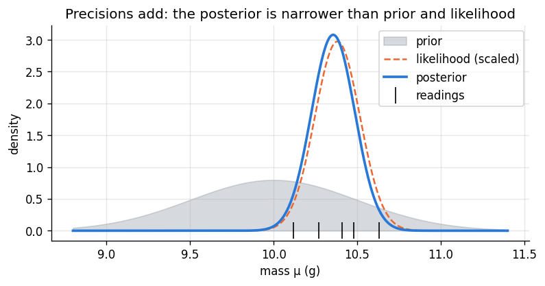
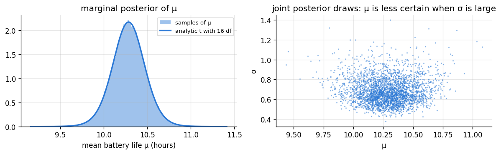

Goal. Derive the conjugate models for measurements: exponential waiting times
with a gamma prior, a normal mean with known variance (by completing the square),
and the normal model with unknown mean and variance, whose marginal posterior for the
mean is a Student t. Each derivation is checked against a simulation.
Model. Waiting times y_1,\dots,y_n between events that occur at an unknown rate
\lambda, with a gamma prior on the rate:
y_i\mid\lambda\overset{\text{iid}}{\sim}\text{Exponential}(\lambda),\qquad \lambda\sim\text{Gamma}(\alpha,\beta).
The likelihood is \prod_i\lambda e^{-\lambda y_i} = \lambda^n e^{-\lambda\sum y_i}, so
p(\lambda\mid y)\propto\lambda^n e^{-\lambda\sum y_i}\cdot\lambda^{\alpha-1}e^{-\beta\lambda}
= \lambda^{\alpha+n-1}e^{-(\beta+\sum y_i)\lambda}, \boxed{\;\lambda\mid y\sim\text{Gamma}\Big(\alpha+n,\ \beta+\sum_i y_i\Big)\;}
Compare with the Poisson-gamma model of chapter 05: there the shape counted events
and the rate counted time periods; here the shape counts events (one per waiting
time) and the rate adds up the time waited. They are two views of the same process.
Example. A bus is scheduled "every 10 minutes", so we expect a rate of about
0.1 buses per minute, but we are not sure how reliable that is. A Gamma(4, 40)
prior has mean 0.1 and is worth 4 observed waits totalling 40 minutes. We then
time 10 gaps between buses.
A useful subtlety: the mean waiting time is 1/\lambda, and the posterior mean of
1/\lambda is not one over the posterior mean of \lambda. For
\lambda\sim Gamma(a,b), \mathbb E[1/\lambda] = b/(a-1) while
1/\mathbb E[\lambda] = b/a. Posterior quantities must be computed for the quantity you
care about, not transformed afterwards. With samples this is automatic: transform
each sample.
import numpy as np
import matplotlib.pyplot as plt
from scipy import stats
plt.rcParams.update({"figure.dpi": 120, "figure.figsize": (7.5, 3.4), "axes.grid": True,
"grid.alpha": 0.3, "axes.spines.top": False, "axes.spines.right": False})
PRIOR, LIK, POST = "#8a949e", "#eb6834", "#2a78d6"
rng = np.random.default_rng(6)
waits = np.array([12.5, 7.1, 15.8, 9.3, 21.0, 11.2, 8.4, 14.6, 10.9, 13.7]) # minutes between buses
a0, b0 = 4.0, 40.0
a1, b1 = a0 + len(waits), b0 + waits.sum()
post = stats.gamma(a=a1, scale=1 / b1)
print(f"posterior Gamma({a1:.0f}, {b1:.1f}); mean rate {post.mean():.4f} per minute")
print(f"mean wait: E[1/λ] = {b1 / (a1 - 1):.2f} min, but 1/E[λ] = {b1 / a1:.2f} min, sample mean {waits.mean():.2f} min")
lam = post.rvs(200_000, random_state=rng)
print(f"by sampling: E[1/λ] = {np.mean(1 / lam):.2f} min, 95% interval for the mean wait "
f"({np.quantile(1 / lam, 0.025):.1f}, {np.quantile(1 / lam, 0.975):.1f}) min")
# Posterior predictive of the next wait: draw λ, then a wait given λ
next_wait = rng.exponential(1 / lam)
print(f"P(next wait > 20 min) = {(next_wait > 20).mean():.3f} (plug-in exponential with 1/E[λ]: "
f"{np.exp(-post.mean() * 20):.3f})")
posterior Gamma(14, 164.5); mean rate 0.0851 per minute
mean wait: E[1/λ] = 12.65 min, but 1/E[λ] = 11.75 min, sample mean 12.45 min
by sampling: E[1/λ] = 12.65 min, 95% interval for the mean wait (7.4, 21.5) min
P(next wait > 20 min) = 0.200 (plug-in exponential with 1/E[λ]: 0.182)
2. The normal mean with known variance
Model. Measurements y_1,\dots,y_n of a quantity \mu by an instrument with known
noise level \sigma, and a normal prior on \mu:
y_i\mid\mu\overset{\text{iid}}{\sim}\text{Normal}(\mu,\sigma^2),\qquad \mu\sim\text{Normal}(m_0, s_0^2).
One observation first. Dropping constants, the log of likelihood times prior is
-\frac{(y-\mu)^2}{2\sigma^2}-\frac{(\mu-m_0)^2}{2s_0^2}
= -\frac12\left[\Big(\frac{1}{\sigma^2}+\frac{1}{s_0^2}\Big)\mu^2 - 2\Big(\frac{y}{\sigma^2}+\frac{m_0}{s_0^2}\Big)\mu\right] + \text{const}.
It is a quadratic in \mu with a negative leading coefficient, so the posterior is
normal. To read off its mean and variance, complete the square: for any a>0,
a\mu^2 - 2b\mu = a(\mu - b/a)^2 - b^2/a, and the last term is a constant. With
a = 1/\sigma^2 + 1/s_0^2 and b = y/\sigma^2 + m_0/s_0^2, the posterior is
Normal(b/a,\ 1/a).
Precision (one over variance) makes this clean: a is the prior precision
1/s_0^2 plus the precision 1/\sigma^2 of one measurement, and the posterior mean
b/a weights y and m_0 by their precisions.
n observations. The data enter only through \bar y, whose distribution is
Normal(\mu, \sigma^2/n), so replace y by \bar y and \sigma^2 by \sigma^2/n:
\boxed{\;\mu\mid y\sim\text{Normal}(m_1, s_1^2),\qquad
\frac{1}{s_1^2} = \frac{1}{s_0^2}+\frac{n}{\sigma^2},\qquad
m_1 = s_1^2\Big(\frac{m_0}{s_0^2}+\frac{n\bar y}{\sigma^2}\Big)\;} Precisions add, and the posterior mean is the precision-weighted average of
the prior mean and the sample mean. The prior is worth \sigma^2/s_0^2 observations.
With a very vague prior (s_0\to\infty) the posterior becomes Normal(\bar y,
\sigma^2/n), whose 95% interval \bar y\pm1.96\,\sigma/\sqrt n is numerically the
classical confidence interval.
The posterior predictive for a new measurement is Normal(m_1,\ s_1^2+\sigma^2):
the variances add because a new measurement is \mu plus independent noise.
Example. A lab weighs a sample on a scale whose readings have standard deviation
\sigma = 0.30 g. The supplier states the mass as 10.0 \pm 0.5 g, which we take as a
Normal(10.0, 0.5^2) prior. Five readings are taken.
sample mean 10.382 g; prior is worth 0.36 readings
posterior Normal(10.356, 0.130^2); 95% credible interval (10.102, 10.610) g
next reading: predictive Normal(10.356, 0.327^2)
grid check: mean 10.356, sd 0.130

3. Unknown mean and unknown variance
Usually \sigma^2 is unknown too. We need a joint prior on (\mu,\sigma^2). The
conjugate choice is the normal-inverse-gamma prior [1, 3]:
\sigma^2\sim\text{InvGamma}(\alpha,\beta),\qquad \mu\mid\sigma^2\sim\text{Normal}\Big(m,\ \frac{\sigma^2}{w}\Big).
Two new pieces:
The inverse-gamma distribution: \sigma^2\sim InvGamma(\alpha,\beta) means
1/\sigma^2\sim Gamma(\alpha,\beta). Its density is
\frac{\beta^\alpha}{\Gamma(\alpha)}(\sigma^2)^{-\alpha-1}e^{-\beta/\sigma^2} and its mean
is \beta/(\alpha-1) for \alpha>1. To sample it, sample a gamma and take one over it.
The prior on \mu is scaled by \sigma^2: w is the number of observations the
prior on \mu is worth, measured in units of the (unknown) noise.
Posterior. The same completing-the-square argument, done for both parameters
together, gives
\sigma^2\mid y\sim\text{InvGamma}\Big(\alpha+\frac n2,\ \ \beta+\frac{(n-1)s^2}{2}+\frac{wn}{2(w+n)}(\bar y-m)^2\Big), \mu\mid\sigma^2,y\sim\text{Normal}\Big(\frac{n\bar y+wm}{n+w},\ \frac{\sigma^2}{n+w}\Big),
where s^2 = \sum_i(y_i-\bar y)^2/(n-1) is the sample variance. The rate of the
inverse-gamma collects the spread within the data and a penalty for disagreement
between \bar y and the prior guess m.
The marginal posterior of \mu. We rarely care about \sigma^2 itself.
Integrating it out of the joint posterior gives a Student t with 2\alpha+n
degrees of freedom, location m^* = (n\bar y+wm)/(n+w) and scale
\gamma = \sqrt{\frac{\beta'}{(n+w)\,\alpha'}},\qquad \alpha' = \alpha+\tfrac n2,\quad \beta' = \text{the posterior rate above}.
Heavier tails than a normal is exactly what honest uncertainty about \sigma should
produce. It is the Bayesian counterpart of the familiar t confidence interval.
Sampling the joint posterior exactly needs no special algorithm: draw
\sigma^2 from its inverse-gamma, then draw \mu from its normal given that
\sigma^2. Each pair is an exact, independent draw from the joint posterior. This
"sample the marginal, then the conditional" pattern (composition sampling)
returns in chapter 08.
Example. The battery life (hours) of 12 phones of a new model is measured. We use
a weak prior: m = 10 hours, w = 1 (worth one phone), and \alpha = 2, \beta = 1 for
the variance (mean of \sigma^2 equal to 1).
life = np.array([9.8, 10.4, 11.1, 9.2, 10.9, 10.1, 9.6, 10.7, 11.4, 10.0, 9.9, 10.6])
n, ybar, s2 = len(life), life.mean(), life.var(ddof=1)
m, w, alpha, beta = 10.0, 1.0, 2.0, 1.0
alpha1 = alpha + n / 2
beta1 = beta + (n - 1) * s2 / 2 + w * n / (2 * (w + n)) * (ybar - m) ** 2
m_star = (n * ybar + w * m) / (n + w)
gamma = np.sqrt(beta1 / ((n + w) * alpha1))
nu = 2 * alpha + n
t_post = stats.t(df=nu, loc=m_star, scale=gamma)
print(f"n = {n}, sample mean {ybar:.3f}, sample sd {np.sqrt(s2):.3f}")
print(f"σ² | y ~ InvGamma({alpha1:.1f}, {beta1:.3f}), posterior mean of σ² = {beta1 / (alpha1 - 1):.3f}")
print(f"μ | y ~ t_{nu:.0f}(location {m_star:.3f}, scale {gamma:.4f}); 95% credible interval "
f"({t_post.ppf(0.025):.3f}, {t_post.ppf(0.975):.3f})")
tc = stats.t.ppf(0.975, n - 1) * np.sqrt(s2 / n)
print(f"classical 95% t confidence interval ({ybar - tc:.3f}, {ybar + tc:.3f})")
# Composition sampling: σ² from its inverse-gamma, then μ given σ²
sig2 = 1 / rng.gamma(alpha1, 1 / beta1, size=200_000)
mu = rng.normal(m_star, np.sqrt(sig2 / (n + w)))
print(f"sampled μ: mean {mu.mean():.3f}, 95% interval ({np.quantile(mu, 0.025):.3f}, {np.quantile(mu, 0.975):.3f})")
fig, ax = plt.subplots(1, 2, figsize=(10, 3.2))
ax[0].hist(mu, bins=150, density=True, color=POST, alpha=0.45, label="samples of μ")
g = np.linspace(mu.min(), mu.max(), 400)
ax[0].plot(g, t_post.pdf(g), color=POST, lw=2, label=f"analytic t with {nu:.0f} df")
ax[0].set_xlabel("mean battery life μ (hours)"); ax[0].legend(fontsize=8)
ax[0].set_title("marginal posterior of μ")
ax[1].plot(mu[:3000], np.sqrt(sig2[:3000]), ".", ms=2, color=POST, alpha=0.4)
ax[1].set_xlabel("μ"); ax[1].set_ylabel("σ"); ax[1].set_title("joint posterior draws: μ is less certain when σ is large")
plt.tight_layout(); plt.show()
n = 12, sample mean 10.308, sample sd 0.654
σ² | y ~ InvGamma(8.0, 3.398), posterior mean of σ² = 0.485
μ | y ~ t_16(location 10.285, scale 0.1808); 95% credible interval (9.901, 10.668)
classical 95% t confidence interval (9.893, 10.724)
sampled μ: mean 10.285, 95% interval (9.902, 10.668)

The right panel shows why the marginal of \mu has heavy tails: the posterior of
\mu is wide in exactly the draws where \sigma is large, and averaging normals of
different widths produces a t.
4. A summary of the conjugate models so far
data model
parameter
conjugate prior
posterior
Binomial(n,\theta)
\theta
Beta(\alpha,\beta)
Beta(\alpha+y,\ \beta+n-y)
Poisson(\lambda), n counts
\lambda
Gamma(\alpha,\beta)
Gamma(\alpha+\sum y_i,\ \beta+n)
Exponential(\lambda), n waits
\lambda
Gamma(\alpha,\beta)
Gamma(\alpha+n,\ \beta+\sum y_i)
Normal(\mu,\sigma^2), \sigma known
\mu
Normal(m_0,s_0^2)
Normal, precisions add
Normal(\mu,\sigma^2)
(\mu,\sigma^2)
Normal-InvGamma
Normal-InvGamma; \mu marginally t
All of these data models are exponential families, and every exponential family
has a conjugate prior of the same "add the sufficient statistics to the
hyperparameters" form [2].
Exercises
For the bus example, what is the posterior probability that the true mean gap is
more than 12 minutes? Compute it both from the gamma posterior of \lambda and from
the samples of 1/\lambda.
Prove \mathbb E[1/\lambda] = \beta/(\alpha-1) for \lambda\sim Gamma(\alpha,\beta).
In the weighing example, how many readings would be needed for the posterior standard
deviation to fall below 0.05 g? Does the answer depend on the readings' values?
Show that updating the normal-mean model with the readings one at a time gives the
same posterior as the batch formula (use the precision form).
For the battery data, shrink the prior on \mu towards m=12 with w=1 and with
w=20. Which conclusion changes, and why does w matter more than m?
Derive the posterior for \sigma^2 with a known mean \mu and an
InvGamma(\alpha,\beta) prior.
References
P. D. Hoff. A First Course in Bayesian Statistical Methods. Springer, 2009. (Chapter 5.)
P. Diaconis, D. Ylvisaker. Conjugate priors for exponential families. The Annals of Statistics, 7(2):269-281, 1979. doi:10.1214/aos/1176344611
A. Gelman et al. Bayesian Data Analysis, 3rd ed. CRC Press, 2013. (Chapter 3.)
G. E. P. Box, G. C. Tiao. Bayesian Inference in Statistical Analysis. Addison-Wesley, 1973.
K. P. Murphy. Conjugate Bayesian analysis of the Gaussian distribution. Technical note, 2007.
W. M. Bolstad. Introduction to Bayesian Statistics. Wiley, 2004.